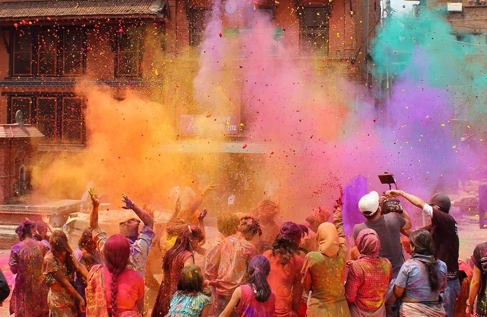
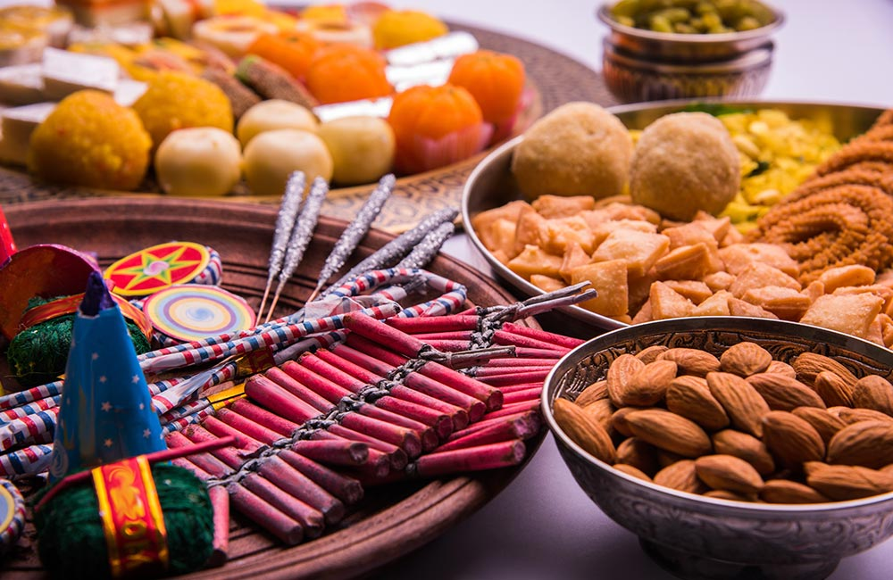
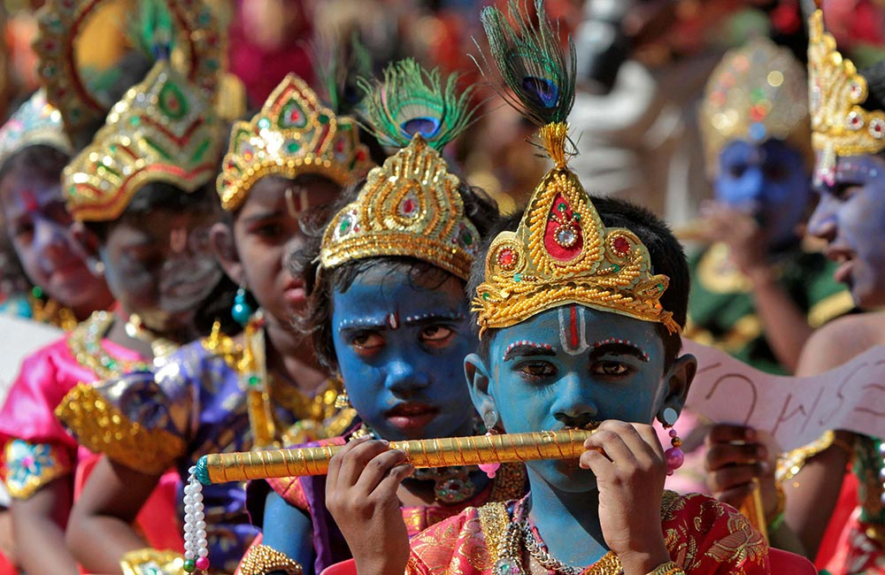
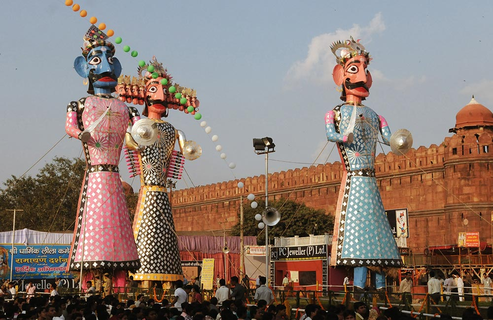

Image Gallery
Holi

Holi is another noteworthy name in the list of festivals of India. Considered the festival of love and the festival of colors, it signifies the arrival of spring and the victory of good over evil. It is celebrated all over the country with a lot of enthusiasm and fervor. Typically, the celebrations start on the eve of the festival. Huge bonfires are lit (symbolizing the burning of the mythical demoness Holika), and people sing and dance around this crackling fire. On the day of the Holi festival, they put dry and wet colors of various hues on each other. Playing with water guns and balloons filled with colored water, and drinking bang thandai (a desi cocktail made with Indian spices) are some of the key attractions of Holi.
Diwali

Undoubtedly, Diwali or Deepavali is the most spectacular festival celebrated in the Indian subcontinent. Autumn heralds in this Hindu festival of lights that is celebrated across the length and breadth of the country. The celebrations are marked by people decorating their homes with candles, earthen lamps, and lights, bursting crackers, and exchanging gifts and sweets with friends and family. Since it is celebrated on a new moon night, these sparkling lamps and lights add a magical feel to the whole scenario. A festival that commemorates Lord Rama’s return with his wife after 14 years of exile and his triumph over Ravana, Diwali symbolizes the ultimate victory of good over evil.
Navratri

Navratri counts as one of the major Hindu festivals, and the celebrations continue for days on end. In Sanskrit, the term Navratri means nine nights. True to its name, the festival spans over nine days and nights. During Navratri, Goddess Shakti is worshipped in different forms. In North India, Navratri celebrations involve vibrant Dandiya Raas and Garba dances that are enjoyed by men, women, and children dressed in colorful traditional attire.
Janmashtami

- Janmashtami marks the birth of Lord Krishna, who is considered to be the eight avatar of Lord Vishnu.
- On this day, devotees worship Lord Krishna at their homes and in temples, and offer a variety of delicacies to please the deity.
- Mathura and Vrindavan, the two historical places in India related to Krishna’s birth and childhood, witness lavish celebrations marked with hymns and dances.
- On this occasion, little children often dress up as Lord Krishna. Another important attraction of the festival is dioramas, narrating the story of the night of the virgin birth, complete with miniature mountains, a river signifying the Yamuna, and prison of Kansa where Devki was imprisoned.
Dussehra

- Dussehra marks the end of Navratri as well as Durga Puja. A prominent name in the Indian festival calendar, it is also known as Vijayadashami.
- As is with most festivals, Dussehra is celebrated in different ways in different parts of the country. While in some states it is celebrated to commemorate the victory of Lord Rama over Ravana, others consider it Goddess Druga’s triumph over Mahishasura.
- Mysore in Karnataka is the best place to enjoy Dussehra in India. During the festival, Mysore Palace is illuminated with around one lakh bulbs, presenting a breath-taking sight. The huge procession carried out by decorated elephants on this occasion is also a spectacle worth witnessing.